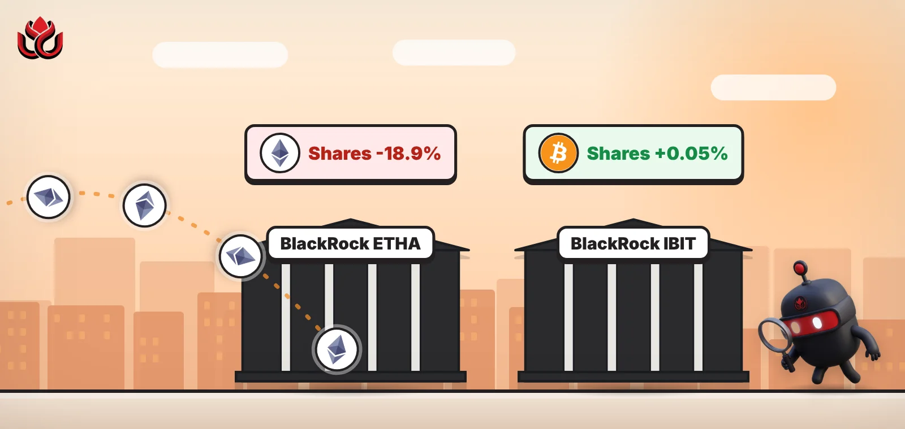
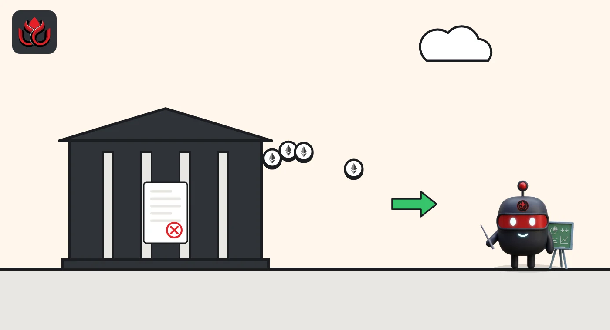

BlackRock's ether ETF lost 19% of its shares since September. Its bitcoin ETF held steady
ETHA, BlackRock's spot ether fund, held about 131.8 million shares on November 6, down from 162.4 million on September 30. That is roughly 693,000 ETH handed back, by our calculation, while the firm's bitcoin fund kept its share count flat.

Key points
- ETHA reported $6.64 billion in net assets and a $50.42 net asset value (NAV) per share on November 6, 2026, which works out to about 131.8 million shares by LC Insight's calculation. iShares did not publish a November share count.
- Its September 30 fact sheet listed 162,426,666 shares and $9.83 billion in net assets, so the share count fell about 18.9% in five weeks.
- BlackRock's bitcoin fund, IBIT, had 0.05% more shares on November 6 than on September 30.
What the numbers show
The iShares Ethereum Trust ETF (ETHA), BlackRock's U.S. spot ether exchange-traded fund, reported net assets of $6,644,396,740 on Friday, November 6, 2026, with a net asset value of $50.42 per share, according to its iShares fund page. The same figures appear on BlackRock's product page.
The page does not print a share count, but dividing net assets by NAV gives about 131.8 million shares. The fund's September 30 fact sheet listed 162,426,666 shares and $9,825.04 million in net assets. So roughly 30.6 million shares, or 18.9%, have been redeemed since then.
A spot ether ETF holds actual ether for its shareholders. When large firms called authorized participants hand shares back to the fund, those shares are canceled and the ether behind them leaves the fund. A falling share count is the clearest sign that money is walking out, separate from any move in the ether price.
How many ether left the fund
ETHA creates and cancels shares in blocks of 40,000, called baskets. On November 6, one basket held 904.77 ETH, or about 0.0226 ETH per share. On that ratio, the fund held about 2.98 million ETH on Friday, and the 30.6 million canceled shares stood for about 693,000 ETH. At Friday's basket value of about $2,229 per ETH, that is roughly $1.55 billion.
Net assets fell about $3.18 billion, or 32%, over the same five weeks. Two forces did that together: fewer shares, and a lower ether price. The fact sheet's benchmark price was $2,673.48 on September 30. ETH traded near $2,128 early on Monday, November 9, down 4.6% in 24 hours, per CoinGecko.
ETHA shares outstanding
million shares
Source: iShares ETHA fact sheet and fund page. November figure is LC Insight's calculation.

Bitcoin holders sat still
BlackRock's iShares Bitcoin Trust ETF (IBIT) went the other way. It had 1,415,720,000 shares on November 6, against 1,414,960,000 on its September 30 fact sheet, a gain of 0.05%. Its assets shrank only because bitcoin fell. Holders did not cash out.
Friday itself was calm for ETHA. It traded 11,193,879 shares, closed the day at a 0.18% discount to NAV, and its NAV fell 0.77%. iShares shows a NAV total return of minus 24.40% for 2026 as of November 5.
What these figures cannot tell you
This covers one issuer. Other U.S. ether funds, from Fidelity, Grayscale and others, are not included, and we could not reach the daily flow tables that sum all of them for this story. The November share count is derived from rounded figures, so it can be off by a few thousand shares. Fact sheet data can also lag the date printed on it by a day.
The derived count also says nothing about who sold. Redemptions show only that holders in aggregate wanted fewer ETHA shares, not whether they were long-term investors, trading firms or funds switching to a cheaper product.
LC Insight analysis
This section is our reading of the facts above, not a statement of fact.
- We think the gap between the two BlackRock funds is the clearest signal here. Bitcoin ETF holders have mostly waited out the drop, while ether ETF holders have been leaving.
- A 19% fall in shares over five weeks points to a steady exit with no single panic day.
- If ether stays near $2,100, the next test is whether ETHA's share count keeps falling in November or levels off as IBIT's has.
What's next
- ETHA net assets and NAV on the iShares page for November 9 and 10
- Whether IBIT's share count stays flat while ETHA's falls
- Ether price against the $2,060 to $2,130 range on CoinGecko
Disclaimer. This article is based on public information and the sources listed below as of the update time shown. It is for information only and is not investment, legal or tax advice. Figures may change as companies and authorities publish new data.
Sources
- iShares, iShares Ethereum Trust ETF (ETHA) fund page, data as of November 6, 2026 (fetched November 9, 2026, 12:50 a.m. ET)
- BlackRock, iShares Ethereum Trust ETF product page, data as of November 6, 2026
- iShares, ETHA fact sheet, as of September 30, 2026
- iShares, iShares Bitcoin Trust ETF (IBIT) fund page, data as of November 6, 2026
- iShares, IBIT fact sheet, as of September 30, 2026
- CoinGecko, Ethereum (ETH) price (fetched November 9, 2026, 12:44 a.m. ET)